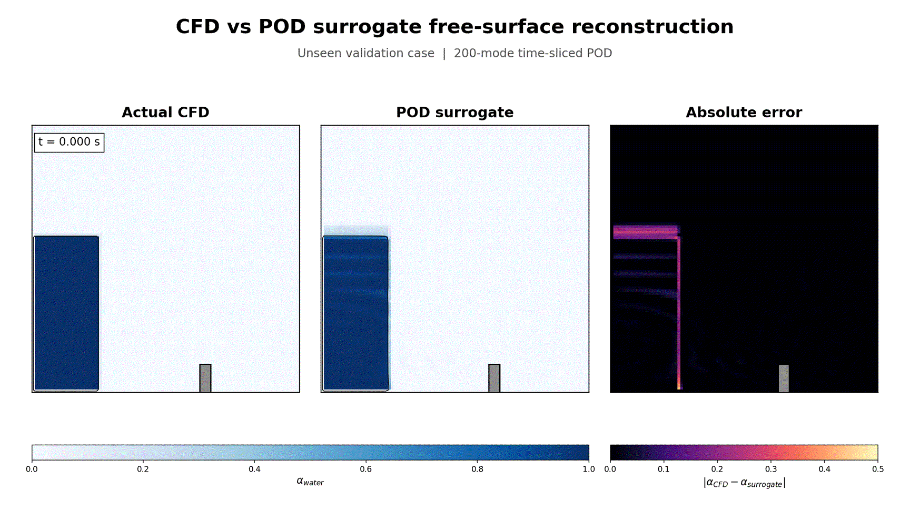
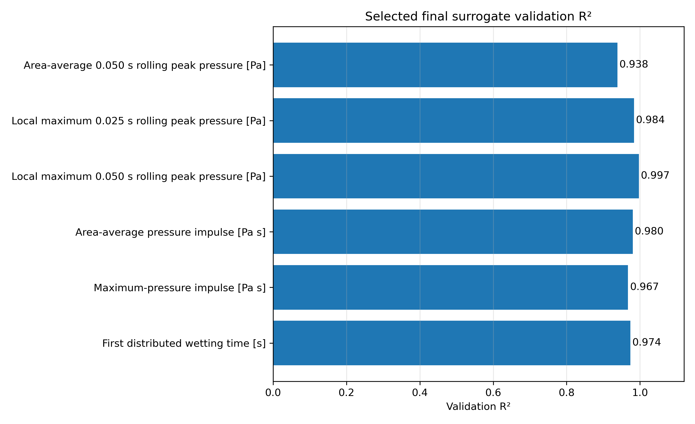
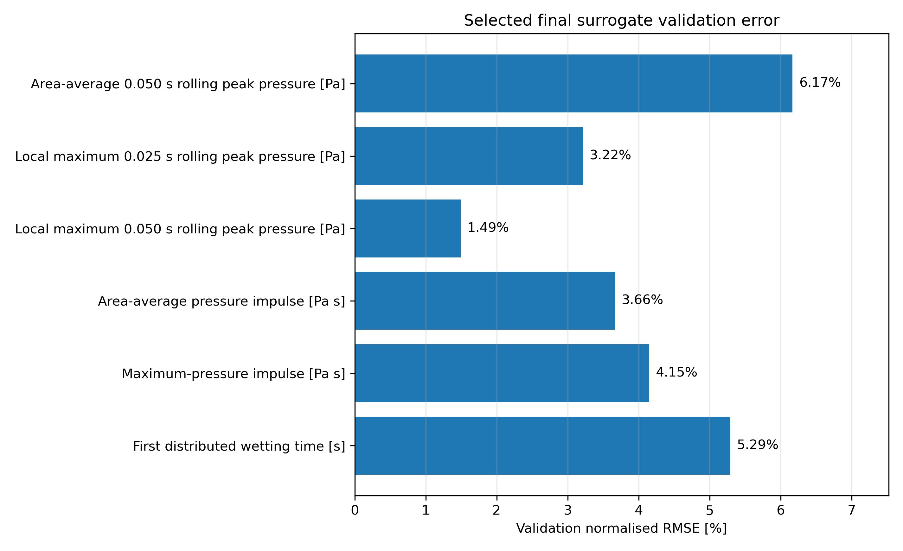
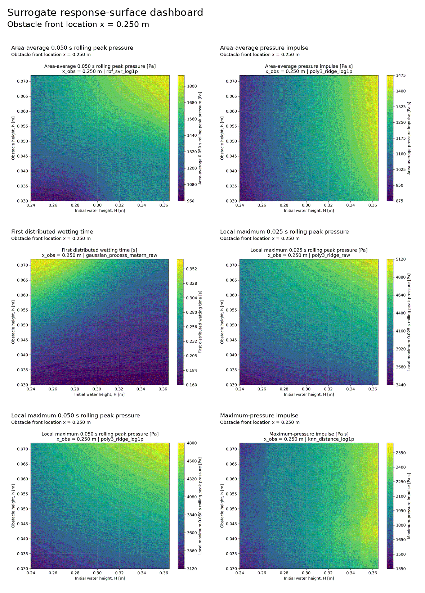
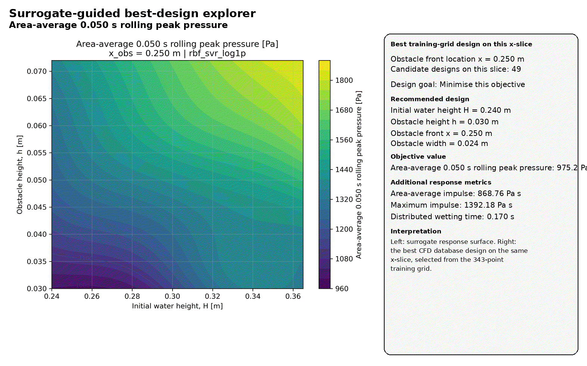
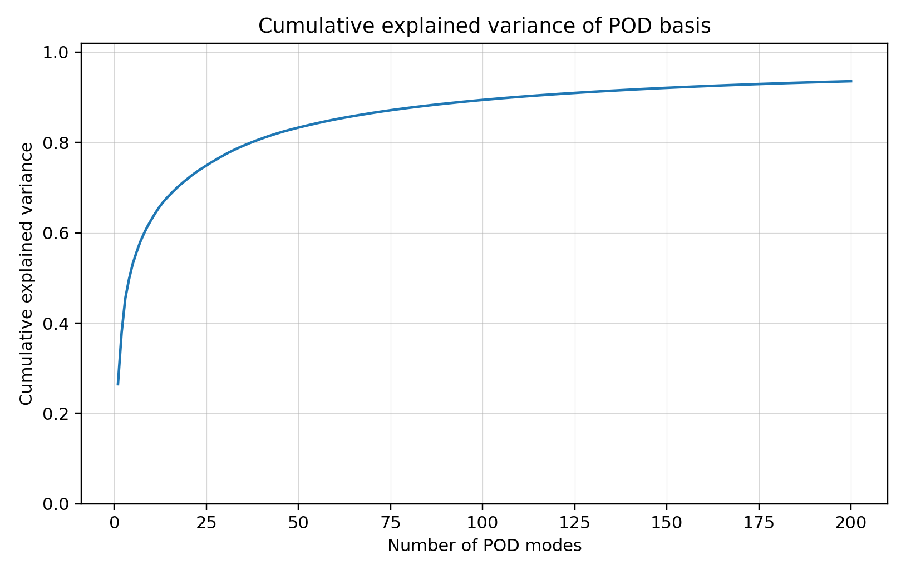
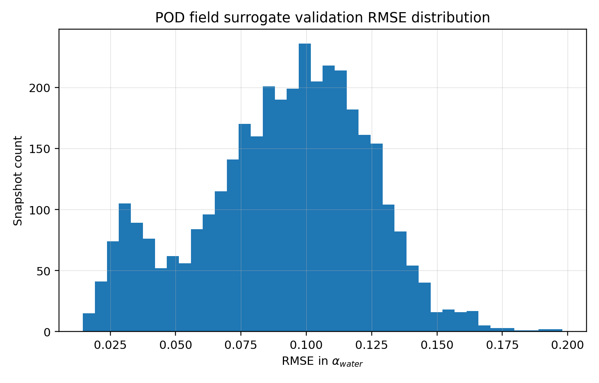
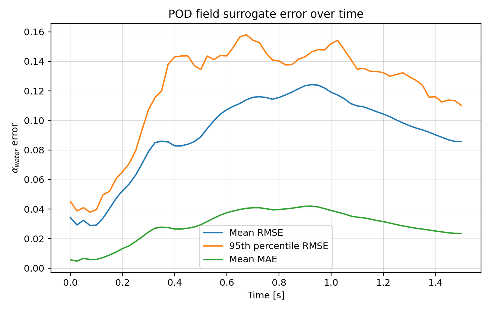
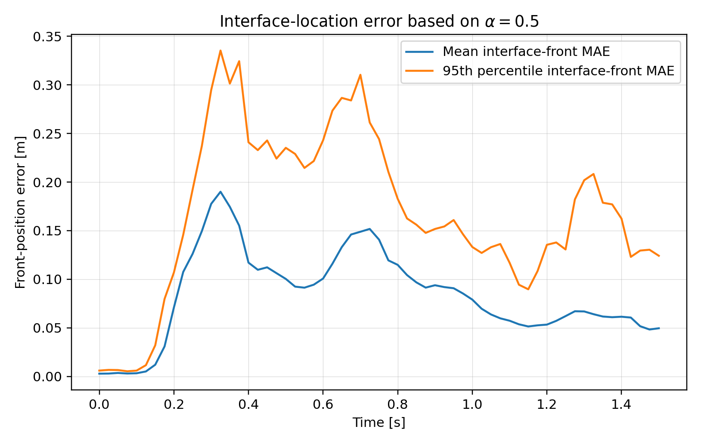
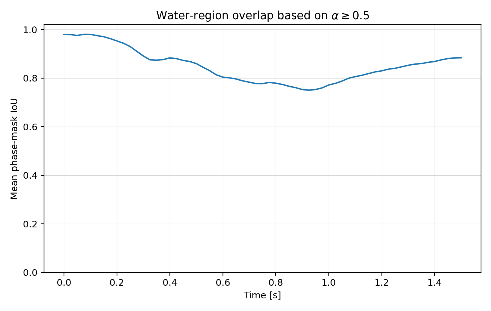

A CFD and data-driven surrogate modelling study. Starting from the standard OpenFOAM interFoam laminar dam-break tutorial, this project builds a fully automated 403-case 2D VOF simulation database, extracts robust impact-pressure and wetting metrics, trains scalar surrogate models for design-space exploration, and develops a POD reduced-order field surrogate that reconstructs the free surface on unseen validation cases.
A dam-break releases a column of water that accelerates across a channel floor and impacts an obstacle. The transient hydraulic load on the obstacle — peak pressure, pressure impulse, and wetting time — depends on the geometry of the water column and the obstacle. The goal of this project is to map that dependence efficiently using high-fidelity CFD data and fast surrogate models that can stand in for the solver during design exploration.
The flow is a gravity-driven, two-phase water–air problem solved with the Volume of Fluid (VOF) method, tracking the alpha.water volume fraction through the OpenFOAM interFoam solver in a laminar, 2D configuration with an end time of 1.5 s per simulation.

The interFoam solver uses a Volume of Fluid method to track the water–air interface. A single momentum equation is solved for the mixture, with density and viscosity blended by the local water volume fraction α. Interface sharpness is maintained by an artificial compression term that is active only within the interface region.
∂α/∂t + ∇·(αU) + ∇·[α(1−α)Ur] = 0. The third term is the interface-compression term that keeps the interface sharp without explicit reconstruction; Ur acts only where α(1−α) ≠ 0.
ρ = αρw + (1−α)ρa and μ = αμw + (1−α)μa. Density and dynamic viscosity are linearly blended between water and air by the local volume fraction.
∇·U = 0, with a single mixture momentum equation balancing pressure, viscous, gravity and surface-tension forces. OpenFOAM solves for the modified pressure prgh = p − ρg·x, removing the hydrostatic part to improve conditioning.
Surface tension is applied through the Continuum Surface Force model (Brackbill et al. 1992), fσ = σκ∇α, where κ is the interface curvature. The system is closed with water/air material properties and integrated transiently to 1.5 s.
Three geometric parameters were varied while the obstacle width was held fixed. A structured design-of-experiments grid provided the training data, and a completely held-out Latin hypercube sample provided unbiased validation cases that the surrogates never saw during training.
| Parameter | Symbol | Range |
|---|---|---|
| Initial water-column height | H | 0.240 – 0.365 m |
| Obstacle height | h | 0.030 – 0.072 m |
| Obstacle front position | x | 0.220 – 0.380 m |
343 structured training cases were generated on a regular grid using a design-of-experiments approach.
60 off-grid validation cases were sampled with Latin hypercube sampling (LHS) and held out completely from training.
The entire study — case setup, simulation, metric extraction, surrogate training, and validation — was automated in Python and Bash so that hundreds of CFD cases could be processed without manual intervention.
OpenFOAM cases are written automatically from each parameter combination, applying the water-column height, obstacle height, and obstacle position to the mesh and initial conditions.
403 interFoam VOF runs to 1.5 s, with fields written every 0.025 s and function-object impact data sampled every 0.005 s.
Obstacle pressure history (area-average and point-maximum), pressure impulse, and distributed wetting time are extracted per case, then aggregated into robust time-windowed impact metrics.
Ten model families are screened per target; the best is selected purely by validation nRMSE on the 60 unseen LHS cases.
alpha.water fields are interpolated onto a common 96×96 grid and stored as a memory-mapped snapshot array — 20,923 training snapshots in total.
A 200-mode incremental PCA basis is trained on the training snapshots, with a per-time-slice KNN regressor mapping design parameters to POD coefficients.
Every surrogate is evaluated on the 60 unseen cases / 3,660 unseen snapshots, with R², nRMSE, interface-front error, and phase-mask IoU reported honestly.
Response-surface plots, parity plots, and animated GIFs are generated for design-space exploration and CFD-vs-surrogate comparison.
Robust time-aggregated metrics proved to be strong surrogate targets. Raw instantaneous peak pressure was deliberately not pursued as a primary target — it is governed by short-duration transient events and is inherently difficult to predict with a single global scalar surrogate. All scores below are on the 60 off-grid LHS cases held out from every stage of training.
| Target | Best Model | Validation R² | Validation nRMSE |
|---|---|---|---|
| Local max 0.050 s rolling peak pressure | poly3 ridge | 0.997 | 1.49% |
| Local max 0.025 s rolling peak pressure | poly3 ridge | 0.984 | 3.22% |
| Area-average pressure impulse | poly3 ridge | 0.980 | 3.67% |
| Maximum-pressure impulse | KNN | 0.967 | 4.15% |
| First distributed wetting time | Gaussian process | 0.974 | 5.29% |
| Area-average 0.050 s rolling peak pressure | RBF SVR | 0.938 | 6.17% |


Because the scalar surrogates evaluate instantly, they can be swept across the full parameter space to produce response surfaces and to search for designs that minimise or maximise a chosen impact metric — turning the static CFD database into an interactive design tool.


Beyond scalar metrics, a time-sliced POD (proper orthogonal decomposition) surrogate reconstructs the full alpha.water free-surface field. A 200-mode incremental-PCA basis was trained on 20,923 snapshots from the 343 training cases and validated on 3,660 snapshots from the 60 unseen cases.
| Metric | Value |
|---|---|
| POD modes | 200 |
| Common grid | 96 × 96 |
| Explained variance (200 modes) | 93.6% |
| Mean validation RMSE in α | 0.091 |
| Mean validation MAE in α | 0.029 |
| Mean phase-mask IoU | 0.851 |
| Mean interface-front MAE | 0.084 m |
| Mean relative water-volume error | 1.8% |





The POD surrogate captures the dominant free-surface evolution but is an approximate reduced-order reconstruction, not a CFD replacement. Sharp moving VOF interfaces are difficult to represent with a linear POD basis — particularly near the obstacle face, wall-contact regions, and thin-film contact lines — and the error panel in the comparison above shows this honestly.
A fully automated pipeline generated, ran, and post-processed a 403-case, ~27 GB OpenFOAM VOF database end-to-end, turning a single tutorial case into a structured engineering dataset.
Robust time-aggregated impact metrics were predicted to within a few percent nRMSE on completely unseen cases — up to R² = 0.997 — fast enough to drive interactive design-space exploration.
A 200-mode POD field surrogate reconstructs the free surface from design parameters alone, while transparently reporting where a linear basis struggles with sharp moving interfaces.
Future work focuses on improving the field surrogate using local POD, Gaussian-process coefficient models, or autoencoder-based reconstruction, while keeping the workflow physically interpretable and validated against CFD.